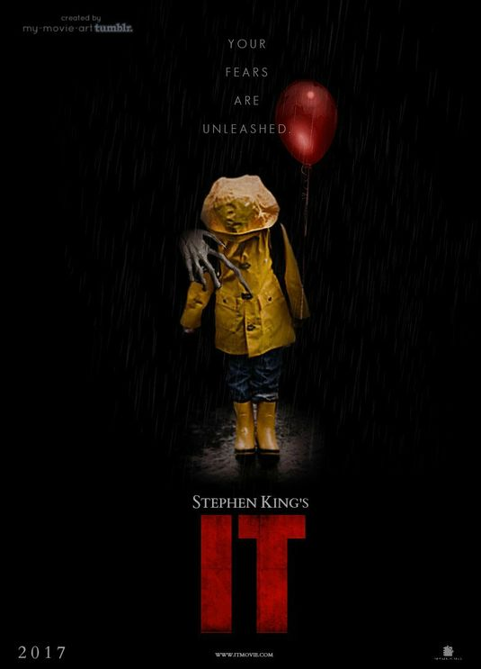
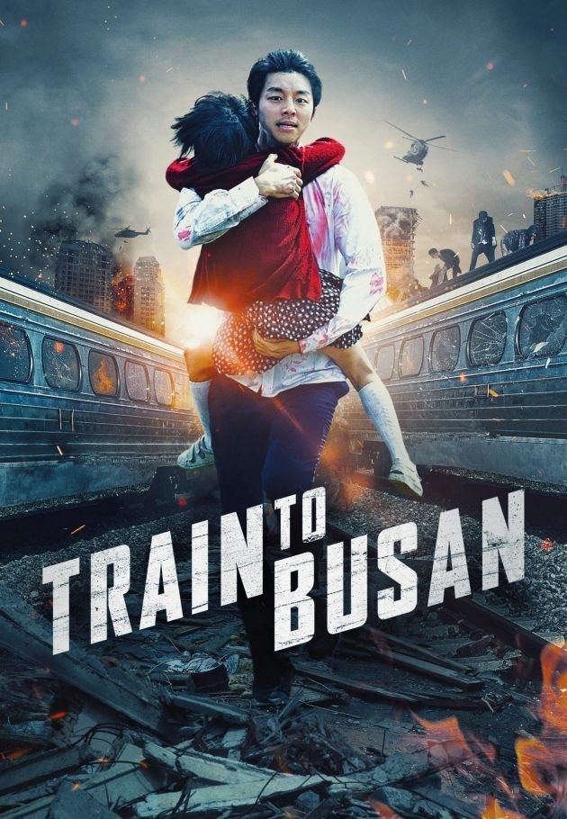
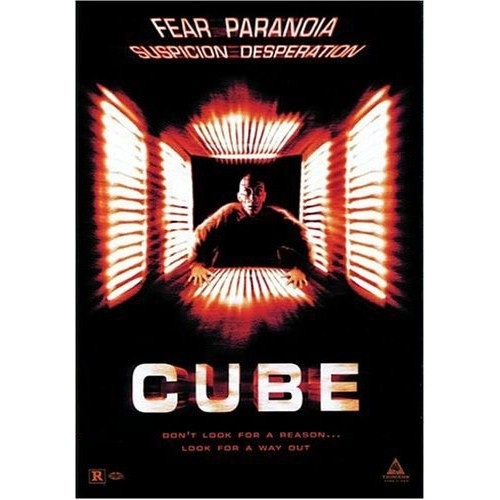
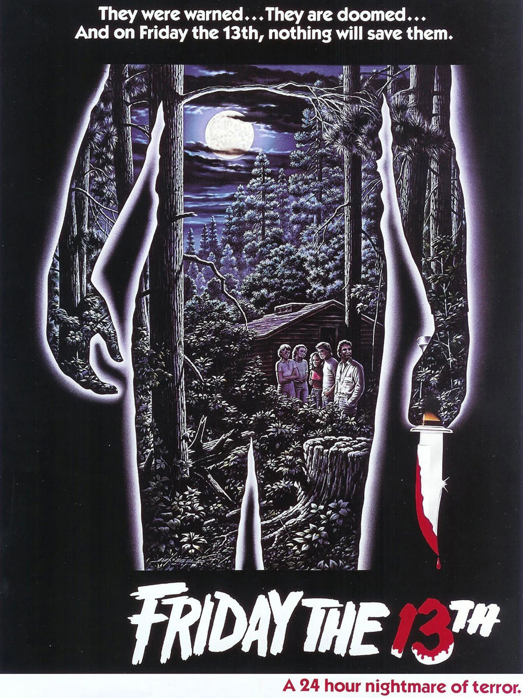
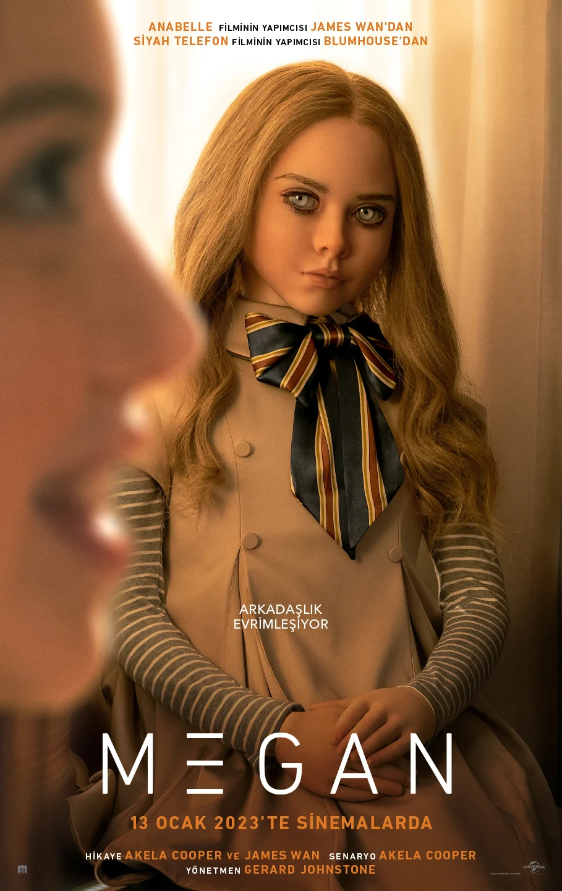

-

IT
Film, Maine'in küçük bir kasabasında yaşayan 7 çocuğu ele alıyor. Bu yedi arkadaş okullarında dışlanan bir gruptur. Ancak en büyük sorunları bu değildir. Arkadaşlar bir yandan hayatın getirdiği sorunlarla, bir yandan da ergenlikle uğraşırken, başlarına beklemedikleri bir bela daha açılır. Kurbanlarının korkularına göre şekle girebilen Pennywise, ürkütücü bir palyaço kılığında bu 7 çocuğa dehşet saçmaya başlar. Artık okuldaki sorunları, verecekleri hayatta kalma mücadelesine oranla bir hayli önemsiz kalacaktır...
-

SCREAM
Scream filminin beşinci devam halkası olan yapımda, bir dizi korkunç suçu kimin işlediğini bulmak için memleketine geri dönen bir kadının hikayesini konu ediyor. 25 yıl önce korkunç cinayetlerle çalkalanan Woodsboro kasabası, yeni bir katille karşı karşıyadır. Hayalet maskesini takan katil, kasabanın kanlı geçmişine ait sırları yeniden canlandırmak için bir grup gencin peşine düşer. Sidney, yıllar önce başından geçenlere benzer seri cinayetleri çözmek için ayrıldığı Woodsboro kasabasına geri döner.
-

TRAIN TO BUSAN
Sok-woo, yoğun iş temposundan dolayı sürekli kızını ihmal etmektedir. Doğum gününde kızının ısrarlarına dayanamayan Sok -woo, onu eski eşinin yanına götürmek için gönülsüzce Seul'den kalkıp Busan'a gidecek olan trene biner. Tren kalkmak üzereyken, Güney Kore'yi etkisi altına alan yıkıcı bir zombi virüsünden etkilenen bir kadın, virüsü trendekilere yaymaya başlar. Virüsün bulaştığı herkes, birer birer zombiye dönüşür. Sebebi belirlenemeyen virüs, tüm ülkeye yayılırken, hızla Busan'a yol alan trende de Sok-woo, kızı ve daha birçok yolcu amansız bir hayatta kalma mücadelesine girişir.
-

ANNABELLE
John Form, oyuncak bebek koleksiyonu yapan hamile eşi Mia için yeni bir oyuncağı gözüne kestirir. Beyaz gelinlik giydirilmiş, eşine zor rastlanır bu antika oyuncak bebek Mia için kusursuz bir hediye olacaktır. Mia beklediği gibi hediyesi Annabelle'i görünce mutlu olur, ancak bu güzel anlar çok uzun sürmez. Form ailesinin evi bir gece evleri sapkın bir tarikat tarafından basılır ve ciddi bir saldırıya uğrarlar. Saldırganlar uzaklaşırlar ancak hiçbir şey çözülmüş değildir. Zira ailenin hiç tahmin edemeyeceği bir kötü ruhu evde bırakmışlardır.
-

CUBE
Farklı sosyal gruplardan, farklı yeteneklere ve eksiklere sahip bir grup insan kendilerini bir anda yokluğun ortasında, bir küpün içerisinde bulur. Nasıl oraya geldikleri belli olmayan bu kişiler, durumu anlayabilmek için birbirlerini tanımak ve birbirlerini anlamak zorundadırlar. Bu küpün içerisinde, bir cevap aramak en az o cevabı bulmak kadar zordur. Çevrelerinde olup biten hiçbir şeyi anlamayan bu insanların başvurabilecekleri tek duygu ise korku duygusu olacaktır.
-

GET OUT
Chris sıradan bir siyahi gençtir. Sevgilisi Rose ile mutlu bir ilişkisi vardır. Rose bir gün Chris'i ailesinin mülküne davet eder. Avrupalı Amerikalı sevgilisinin ailesinde bir tuhaflık olduğunu sezen Chris bir süre sonra mülkte kalmakta olan siyahi kişilerin bir bir kaybolduğunu öğrenir. Bunun üzerine tuz biber olan şey ise başka bir siyahi adamın kendisine iş işten geçmeden gitmesi yönündeki uyarısı olur. Chris bir şeylerin ters gittiğini sezmeye başladığında kurtulması sandığından çok daha zor olacaktır...
-

EVIL DEAD RISE
Kötü Ruh: Uyanış, yıllar içinde birbirlerinden uzaklaşan iki kardeşin hayatına odaklanıyor. Zamanla birbirlerinden uzaklaşan iki kardeş, aradan geçen yılların ardından yeniden bir araya gelir. Ancak büyük bir tehlike onları beklemektedir çünkü et yiyen kötü ruhlar canlanmıştır. Kendilerini bir anda büyük bir kabusun içinde bulan iki kardeş, hayatta kalabilmek için farklılıklarının üstesinden gelip, birlikte hareket etmek zorundadır.
-

13'TH FRIDAY
13. Cuma, minimal senaryosu ancak dönemine göre bir hayli ilerici efektleriyle günümüzün bir çok sinema otoritesine göre "kült statüsünde" bir yapım olarak, benzeri yüzlerce teen-slasher prodüksiyonlarıyla arasındaki makası bir hayli açmıştır... Filmde ana mekan, Camp Crystal Lake'tir... Burası, on yıllar önce esrarengiz cinayetlerin yaşandığı, terkedilmiş bir gençlik kampıdır. Gözünü budaktan sakınmayan cesur bir girişimci kampı tekrar hizmete açmaya karar vererek yakışıklı delikanlılar ve güzel genç kızlardan oluşan bir kadroyu işe alır. Bir yağmur fırtınası kampı dünyanın geri kalanından soyutladığında korkunç ölümler başlar. Gençler sırayla, korkunç derecede yaratıcı şekilde cinayete kurban gitmektedir.
-

THE INVISIBLE MAN
Film, varlıklı ve zeki bir bilim insanıyla sürdürdüğü ilişkisinde fiziksel ve duygusal şiddet görmekte olan Cecilia Kass'ın çevresinde örülüyor. Kontrolcü ve baskıcı olan erkek arkadaşına daha fazla dayanamayan Cecilia gecenin bir yarısı kaçmanın bir yolunu bulur ve yaşadığı kabustan olabildiğince uzaklaşmaya karar verir. Eski sevgilisinin kendisini bulacağından endişe ettiği için saklanmaya karar veren genç kadın, kız kardeşi, kardeşlerin bir çocukluk arkadaşı ve onun kızından yardım alır. Ancak Cecilia’nın sorunlu eski sevgilisi intihar ettiğinde ve ona büyük servetinin cömert bir kısmını bıraktığında, Cecilia ölümünün bir aldatmaca olduğunu düşünmeye başlar. Bir dizi ürkütücü tesadüf tehlikeli hale gelmeye ve sevdiği insanların hayatını tehdit etmeye başladığında, Cecilia çaresizce kimsenin göremediği biri tarafından avlandığını kanıtlamaya çalışır. Ancak bu süreçte genç kadının akıl sağlığı tehlike altına girer.
-

M3GAN
"M3GAN" dahi bir oyuncak şirketinde çalışan robotik mühendisi olan bir adamın hikayesini konu ediyor. Mühendis, yakın zamanda yetim kalmış olan yeğenine destek olması ve arkadaşlık etmesi için bir robot tasarlar. Ancak küçük kız ile duygusal olarak bağ kurmaya programlanmış insansı robot, programlaması fazla iyi işlediği için yeni arkadaşı konusunda aşırı korumacı bir hale gelir. Bu korkutucu bağlanma durumu pek çok tehlikeyi de beraberinde getirir.